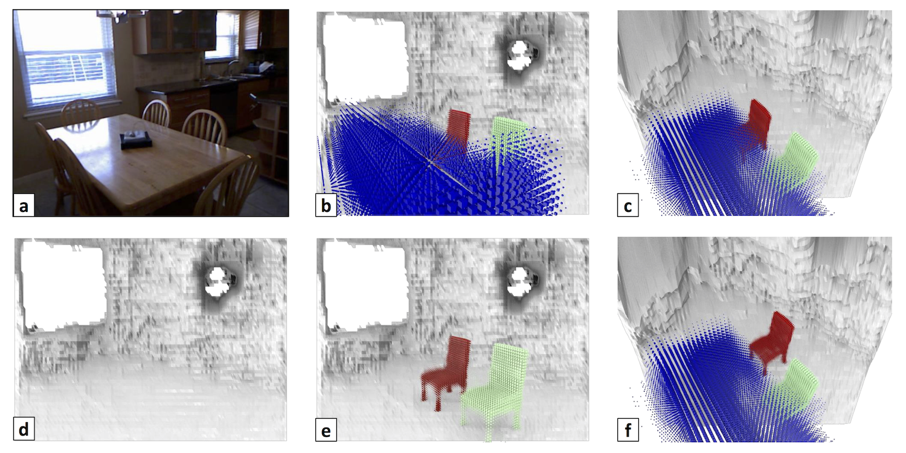
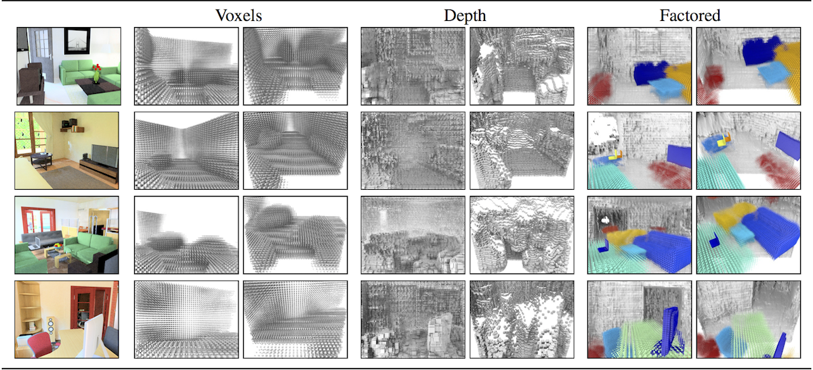
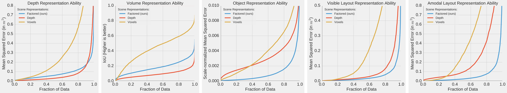

Factoring Shape, Pose, and Layout
from the 2D Image of a 3D Scene
|
University of California, Berkeley
|

|
Our 3D representation. Given a single 2D image (a) we infer a 3D representation which is factored in terms of a set of objects inside an enclosed volume. We show it from the camera view in (b) and a novel view in (c). By virtue of being factored, our representation trivially enables answering questions that are impossible in other ones. For example, we can give the scene (d) without any objects; (e) without the table; or (f) answer "what would it be like if I moved the chair".
|
The goal of this work is to take a single 2D image of a scene and recover the 3D structure in terms of a small set of factors: a layout representing the enclosing surfaces as well as a set of objects represented in terms of shape and pose. We propose a convolutional neural network-based approach to predict this representation and benchmark it on a large dataset of indoor scenes. Our experiments evaluate a number of practical design questions, demonstrate that we can infer this representation, and quantitatively and qualitatively demonstrate its merits compared to alternate representations.
Paper
|
Tulsiani, Gupta, Fouhey, Efros, Malik.
Factoring Shape, Pose, and Layout
from the 2D Image of a 3D Scene.
CVPR, 2018. (to appear)
|
Code
Results

|
Qualitative comparison. A visualization of the proposed (Factored) representation in comparison to (Voxels) a single voxel grid and (Depth) a depthmap. For each input image shown on the left, we show the various inferred representations from two views each: a) camera view (left), and b) a novel view (right).
|

|
Quantitative comparison. Analysis of the ability of various representations to capture different aspects of the whole scene. We compare our proposed factored representation against voxel or depth-based alternatives and evaluate their ability to capture the following aspects of the 3D scene (from left to right): a) Visible depth, b) Volumetric occupancy, c) Individual objects, d) Visible depth for scene surfaces (floor, walls etc.), and e) Amodal depth for scene surfaces.
|
Acknowledgements
This work was supported in part by Intel/NSF VEC award IIS-1539099, NSF Award IIS-1212798, and the Google Fellowship to SG. We gratefully acknowledge NVIDIA corporation for the donation of Tesla GPUs used for this research. This webpage template was borrowed from some colorful folks.
|
{kind=link}
{kind=link}
{kind=link}